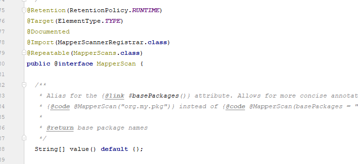
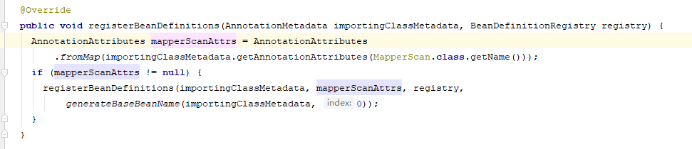
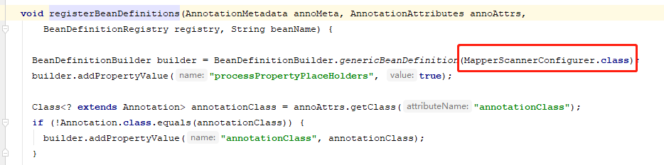
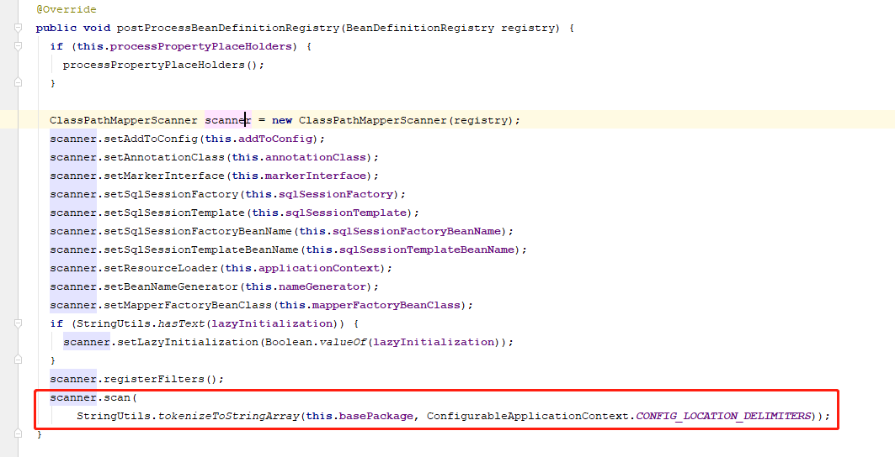
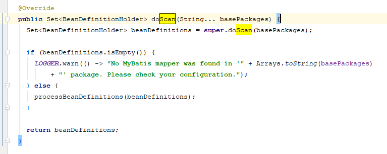
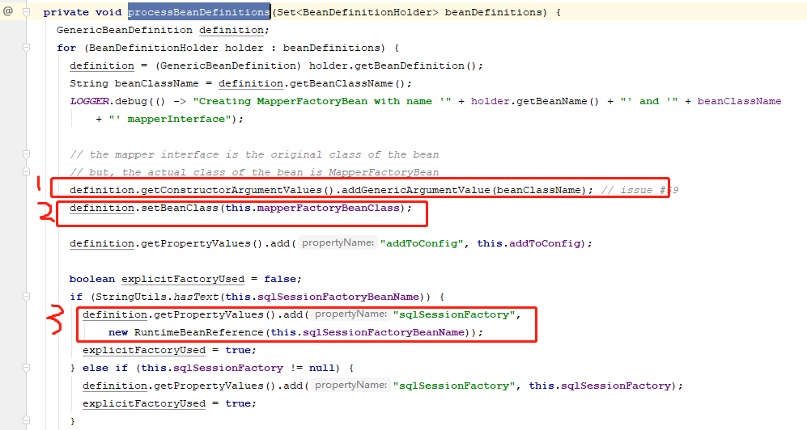
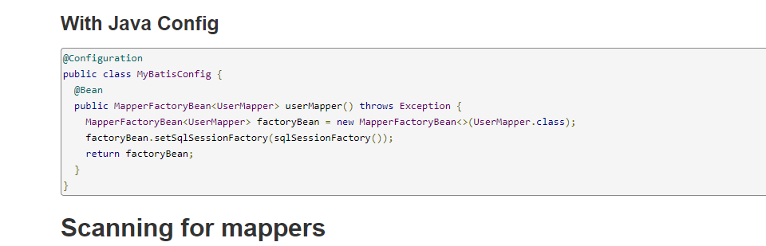

@MapperScan注解的作用
在Mybatis整合Spring过程中有一个很重要的类就是MapperFactoryBean,这个可以将Mybatis生成的代理类对象添加到Spring容器当中，但是单个类的添加显然不符合Mybatis的要求，所以Mybatis还提供了@MapperScan注解。在SpringBoot+Mybatis的项目中，我们常常会在启动类上添加@MapperScan注解，这个注解可以将声明包下所有的mapper的代理对象添加到spring容器中，所以在mapper接口上，我们没有必要添加@Repository手动注册到spring容器中。
@MapperScan原理简单分析
来看看@MapperScan注解：

我们可以发现这个注解上面有个@Import注解，@Import注解是用来导入配置类或者一些需要前置加载的类，@Import支持 三种方式：
- 带有@Configuration的配置类(4.2 版本之前只可以导入配置类，4.2版本之后 也可以导入 普通类)
- ImportSelector 的实现
- ImportBeanDefinitionRegistrar 的实现。
相当于将MapperScannerRegistrar这个类注册到了Spring容器中；Spring会去执行这个类的registerBeanDefinitions方法：

调用registerBeanDefinitions方法首先判断@MapperScan有没有写参数 条件成立 调用registerBeanDefinitions方法：

这里会生成一个MapperScannerConfigurer类的BeanDefinition，Spring容器最后会去执行这个类中的postProcessBeanDefinitionRegistry方法：

这里会创建一个ClassPathMapperScanner对象，并且去扫描在@MapperScan注解中声明包下的类，进入到ClassPathMapperScanner类中的doScan方法中：

在这里调用父类的doScan方法扫描包下的所有类，然后调用processBeanDefinitions方法：

从这里可以看出，使用@Mapperscan扫描整个dao层的原理还是基于Mybatis给出的MapperFactoryBean类，遍历整个dao层中的每个类对应的BeanDefinition，在第一步调用构造方法给MapperFactoryBean中的mapperInterface赋值，声明要代理的对象，第二步设置BeanDefinition为MapperFactoryBean类，第三步给MapperFactoryBean中的sqlSessionFactory赋值，到此，就把dao下面的类的代理对象注册到了Spring容器中。
可以查看Mybatis-Spring的官网，注册单个Bean的方法：

所以@MapperScan的原理就是根据声明包下的类生成对应的MapperFactoryBean对象。
模拟@MapperScan注解
自定义一个@MyMapperScan注解
1 |
|
编写MyImportBeanDefinitionRegister类
1 | /** |